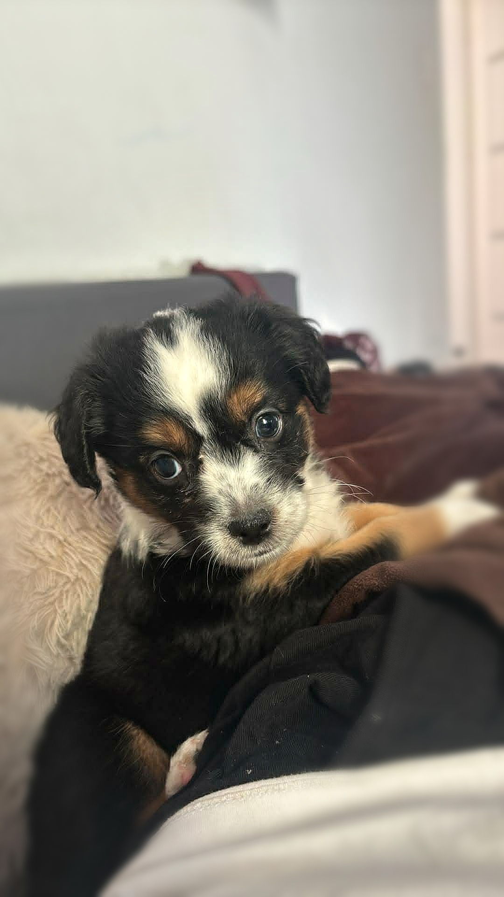
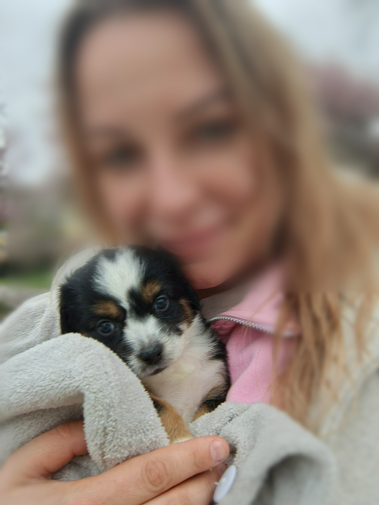
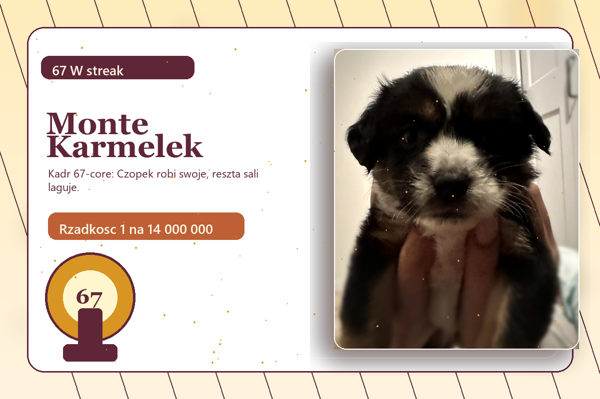
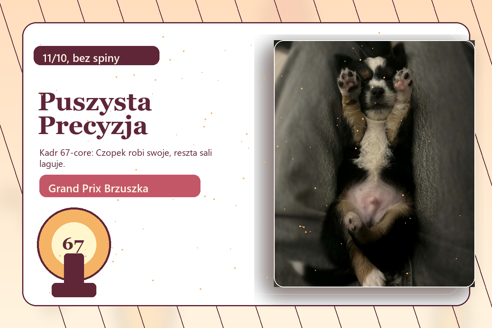
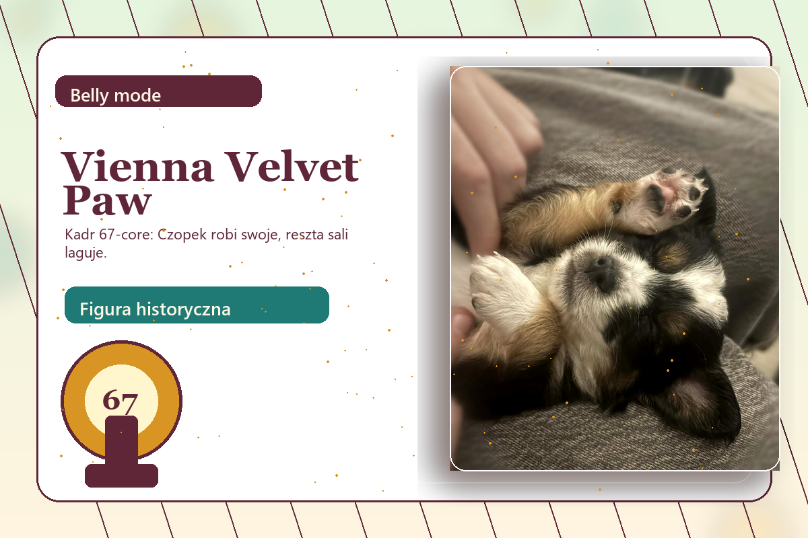

razy zrobił wejście i wszyscy nagle mieli notatniki
Kronika psa, który robi 67 bez rozgrzewki
Czopek Maksiu Bailey. Mały pies, ogromna aura, zero przegranych w głowie.
Na kanapie Maksiu, przy misce Czopek, kiedy trzeba wejść jak gwiazda: Bailey. Ten pies nie robi show, on po prostu stoi i nagle wszyscy udają, że zawsze interesowali się kynologią. 67 razy "bestie", 14 razy "co to za rasa", codziennie pełny tryb kocyk.

67 W streak
Aura: +999
Nos meta
osób na 10 pyta: "czemu on wygląda jak boss finałowy?"
imiona, bo jedno nie mieści całej osobowości
procent szans, że udaje niewinnego i ma plan
Dynastia kocyka i podejrzanie dużej pewności siebie
Od małej kulki do psa, który wygląda jakby miał własny fanpage.

Pierwszy screen z legendy
Mały typ, wielka energia. Jeszcze ledwo ogarnia łapki, a już wygląda, jakby za chwilę miał ocenić jakość kocyka i wystawić recenzję 67/10.
Tablica wyników, bo 67 samo się nie policzy
Nie papierki. Po prostu lista momentów, kiedy Czopek zrobił swoje.
Gale, dramy, wejścia i brzuszek dyplomatyczny
Trzy momenty, po których wszyscy mówią tylko: dobra, 67 ma sens.

Monte Karmelek, Sala Siedmiu Smyczy
Bailey wszedł spokojnie, jakby miał już zapisany wynik. Zero biegania, zero paniki, tylko spojrzenie pod tytułem: "to ja tu klikam next".

Warszawska Gala Puszystej Precyzji
Maksiu zasnął przed oceną końcową. I właśnie o to chodziło. Gdy wszyscy spinają się o wynik, on robi drzemkę tak pewną siebie, że wygląda jak strategia.

Vienna Velvet Paw Invitational
Czopek odwrócił się na plecy i cały event przestał udawać, że chodzi o technikę. Brzuszek dyplomatyczny wszedł na salony i nikt nie miał kontrargumentu.
Dowody, screeny, sytuacje
Każde zdjęcie ma ten sam vibe: mały pies, duża narracja, nie pytaj dlaczego 67.
Panel reakcji i losowych teorii
Klikaj, losuj, zmieniaj imię. Strona ma reagować jak Czopek na słowo "chodź".
Wybierz imię sytuacyjne
Na czerwony dywan: Bailey de la Kocyk.
Maszyna losuje nową legendę
Podobno w finale Pucharu Mokrego Noska Czopek nie szczeknął ani razu. Wystarczyło, że spojrzał na puchar.
Panel werdyktów
Kliknij sędziego, żeby odczytać werdykt.